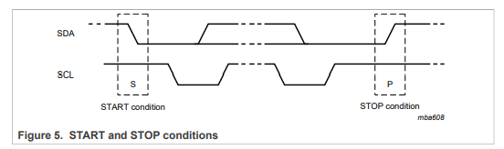
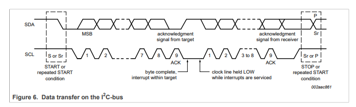
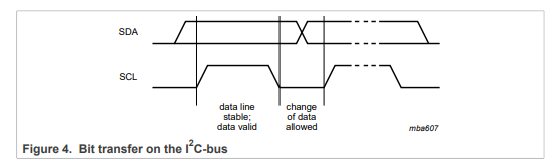

I2C协议（一）
本文最后更新于：2023年10月29日 下午
- 参考
- 波形文件来自NXP的IIC user manual.
1. I2C 用来做什么？
- 全称：Inter-Integrated Circuit.
- 一个双向，两线（SCL/SDA）制总线协议；用于主控器件和外围设备器件互联通信。简化PCB布线，降低成本。
- I2C是一种多主机总线，所以也提供了仲裁功能，仲裁相关内容见这篇博客。
2. I2C 的5种速率模式
- 对于不同的器件使用不同的模式，一共有5种模式，具体可看这篇文章.
3. 通信过程
- （1）当总线空闲时，SDA和SCL都处于高电平状态。
- （2）当主设备决定开始通讯时，需要首先发送开始信号 。
- （3）发送从机设备的地址（7 bits）以及1bit数据传送方向（R/W）；一共8bit，一个字节大小的数据。
- （4）被寻址的从机发送应答信号给主机。
- （5）发送器送出一个字节的数据，接收器收到完毕返回一个应答信号给主机。（发送器和接收器根据（3）中指定的传送方向分别选择为主机/从机）。
- （6）重复（5）直到通信完成后，主机发送停止信号释放总线。
- 注意：发送数据过程中不可以改变数据传送方向，在（3）那步指定之后就不可更改。除非重启通信。
4. I2C的基础信号
起始、停止、应答和非应答信号。
- 起始信号：SCL处于高电平时，SDA从高电平到低电平变化，为起始信号。
- 停止信号：SCL处于高电平时，SDA从低电平到高电平变化，为停止信号。

- 应答信号：其出现在一个字节传输完成之后，第9个SCL时钟周期内，SDA总线的控制权从主机给到从机，SDA总线由于上拉电阻的原因为高，如果从机正确的收到了数据，那么会将SDA拉低。
- 主机发现SDA被拉低之后，可以选择下一步操作（发下一字节的传输/停止传输）。
- 需要注意，应答信号是接收设备给发送设备的反馈信号，而并不一定是从机给主机的反馈信号。

- 非应答信号：第9个SCL时钟周期，SDA保持高电平，表示非应答，主机就需要发送停止信号，结束通信。以下情况可能会出现非应答：
- 主机指定的地址，I2C总线上没有对应地址的从机设备。
- 主机发送从机地址，希望通信时；从机正忙，没办法通信。
- 主机接收从机发送的数据，主机产生非应答信号，告诉从机不要再发数据了，传输结束了。
数据有效性
- I2C在进行数据传送时，在SCL为低电平时发送器向SDA上送1bit数据，此时SDA可以发生变化；在SCL为高电平时，接收器从SDA上采样1bit数据，SDA需要保持稳定。

- I2C传输的一帧有9位信号，包括一个字节的传输信号和1bit的应答/非应答信号。对于第一笔主机发送从机的传输包括（地址7bits
+ 传输方向1bit）+ 1bit应答信号。
- 对于1字节的数据，先发送高位，再传送低位。
- 对于1字节的数据，先发送高位，再传送低位。
- 前面介绍的SCL和SDA高低电平判断有些混乱，这里做一下总结。
- 在开始和结束的判断，需要判断SCL信号为高电平时，SDA的变化。
- 在采样SDA时，需要判断SCL信号是否为高电平/低电平采样。
- 在判断应答/非应答，需要在SCL为高电平时，判断SDA信号是否被拉高/拉低。
如有问题，请指正！！
I2C协议（一）
http://binbinqian.cn/2023/10/28/I2C协议（一）/